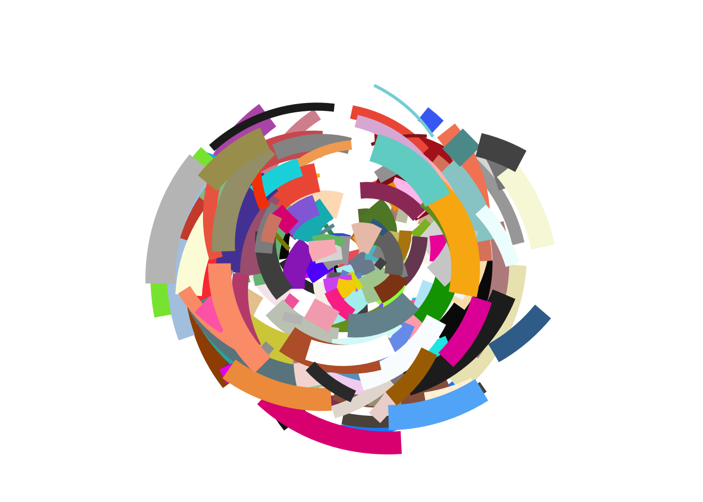
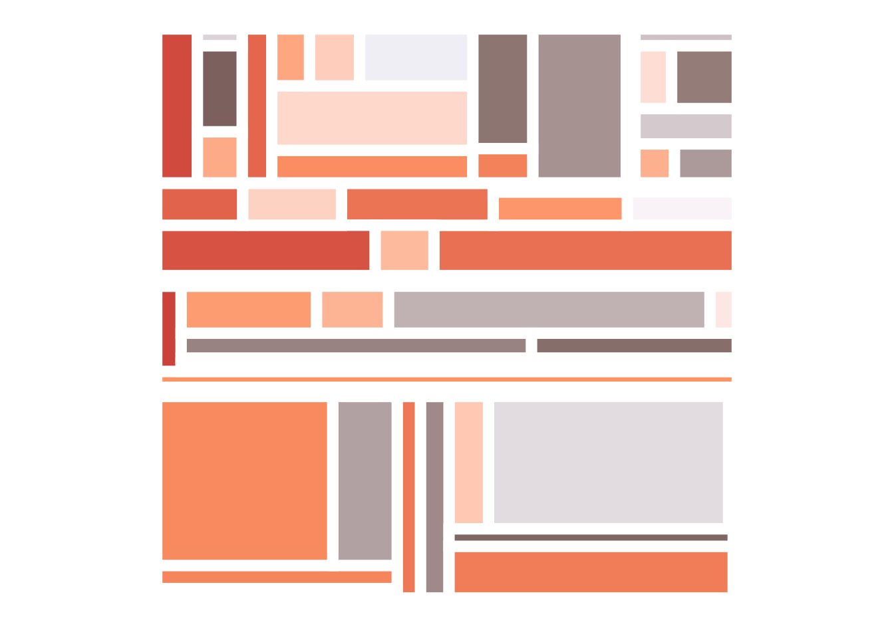

Code
# loading in packages
library(ggplot2)
library(tibble)
library(ggthemes)
library(scales)
library(dplyr)Set Up:
# loading in packages
library(ggplot2)
library(tibble)
library(ggthemes)
library(scales)
library(dplyr)Exercise 1:
# exercise 1: creating a plot using the mpg data set
mpg %>%
ggplot(aes(hwy, cty, color = manufacturer, size = displ)) +
geom_point(show.legend = FALSE) +
coord_polar() +
theme_void() 
Exercise 2:
# exercise 2.1 creating polar art object
polar_art <- function(seed, n, palette) {
# set the state of the random number generator
set.seed(seed)
# data frame containing random values for
# aesthetics we might want to use in the art
dat <- tibble(
x0 = runif(n),
y0 = runif(n),
x1 = x0 + runif(n, min = -.2, max = .2),
y1 = y0 + runif(n, min = -.2, max = .2),
shade = runif(n),
size = runif(n)
)
# plot segments in various colours, using
# polar coordinates and a gradient palette
dat |>
ggplot(aes(
x = x0,
y = y0,
xend = x1,
yend = y1,
colour = shade,
size = size
)) +
geom_segment(show.legend = FALSE) +
coord_polar() +
scale_y_continuous(expand = c(0, 0)) +
scale_x_continuous(expand = c(0, 0)) +
scale_colour_gradientn(colours = palette) +
scale_size(range = c(0, 10)) +
theme_void()}
# changing seed, n, and palette to customize
polar_art(seed = 13, n = 111, palette = c("lightblue", "purple", "darkblue"))
# exercise 2.2: new modified polar art function
polar_art_new <- function(seed, n, palette) {
# set the state of the random number generator
set.seed(seed)
# data frame containing random values for
# aesthetics we might want to use in the art
dat <- tibble(
x0 = runif(n),
y0 = runif(n),
x1 = x0 + runif(n, min = -.2, max = .2),
y1 = y0 + runif(n, min = -.2, max = .2),
shade = runif(n),
size = runif(n)
)
# changing geometry to alter graph shape
dat |>
ggplot(aes(
x = x0,
y = y0,
xend = x1,
yend = y1,
colour = shade,
size = size )) +
geom_point(show.legend = FALSE) +
coord_polar() +
scale_y_continuous(expand = c(0, 0)) +
scale_x_continuous(expand = c(0, 0)) +
scale_colour_gradientn(colours = palette) +
scale_size(range = c(0, 5)) +
theme_void()
}
# changing seed, n, and palette to customize
polar_art_new(seed = 13, n = 111, palette = c("lightblue", "purple", "darkblue"))Exercise 3
# exercise 3.1: creating the random color palette generator
sample_canva <- function(seed = NULL) {
if(!is.null(seed)) set.seed(seed)
sample(ggthemes::canva_palettes, 1)[[1]]}
show_col(sample_canva())show_col(sample_canva())# exercise 3.2: creating a random color generator
sample_named_colours <- function(seed = INPUT){
colors(distinct = TRUE)}
# using polar art to showcase the random color generator
polar_art(seed = 13, n = 199, palette = sample_named_colours(seed = 2))
# exercise 3.3: picking 1 random color from 600
sample_canva2 <- function(seed = NULL) {
if(!is.null(seed)) set.seed(seed)
sample(unlist(ggthemes::canva_palettes), 1)[[1]]}
show_col(sample_canva2())
Exercise 4
# exercise 4.1: testing flexibility of functions
# loading in functions
sample_canva <- function(seed = NULL) {
if(!is.null(seed)) set.seed(seed)
sample(ggthemes::canva_palettes, 1)[[1]]}
sample_data <- function(seed = NULL, n = 100){
if(!is.null(seed)) set.seed(seed)
dat <- tibble(
x0 = runif(n),
y0 = runif(n),
x1 = x0 + runif(n, min = -.2, max = .2),
y1 = y0 + runif(n, min = -.2, max = .2),
shade = runif(n),
size = runif(n),
shape = factor(sample(0:22, size = n, replace = TRUE)))}
polar_styled_plot <- function(data = NULL, palette) {
ggplot(
data = data,
mapping = aes(
x = x0,
y = y0,
xend = x1,
yend = y1,
colour = shade,
size = size)) +
coord_polar(clip = "off") +
scale_y_continuous(
expand = c(0, 0),
limits = c(0, 1),
oob = scales::oob_keep) +
scale_x_continuous(
expand = c(0, 0),
limits = c(0, 1),
oob = scales::oob_keep) +
scale_colour_gradientn(colours = palette) +
scale_size(range = c(0, 10)) +
theme_void() +
guides(
colour = guide_none(),
size = guide_none(),
fill = guide_none(),
shape = guide_none())}
# making plot exploring different values
dat1 <- sample_data(n = 1300, seed = 123)
dat2 <- sample_data(n = 20, seed = 1) |>
mutate(y0 = .3 + y0 * .6, y1 = .3)
# changing seed, size, color and lineend
polar_styled_plot(palette = sample_canva(seed = 6)) +
geom_segment(
data = dat1 |> mutate(size = size * 3.1)) +
geom_segment(
data = dat2 |> mutate(size = size / 7.6),
lineend = "round",
colour = "black") +
geom_point(data = dat2 |> mutate(size = size * 2),
colour = "white")
# # exercise 4.2: creating my own style of plot
my_styled_plot <- function(data = NULL, palette) {
ggplot(data = data, mapping = aes(x = x0, y = y0, xend = x1, yend = y1,
colour = shade, size = size)) +
coord_flip(clip = "off") +
scale_y_continuous( expand = c(0, 0), limits = c(0, 1), oob = scales::oob_keep) +
scale_x_continuous(expand = c(0, 0), limits = c(0, 1), oob = scales::oob_keep) +
scale_colour_gradientn(colours = palette) +
scale_size(range = c(0, 10)) +
theme_void() +
guides(colour = guide_none(),size = guide_none(), fill = guide_none(), shape = guide_none())}
# creating a customized plot with different geom, colors, and positions.
my_styled_plot(palette = sample_canva(seed = 901)) +
geom_segment(data = dat1 |> mutate(size = size * 91)) +
geom_curve(data = dat2 |> mutate(size = size / 0.1),
lineend = "round",
colour = "white",
position = "jitter") +
geom_jitter(data = dat2 |> mutate(size = size * 69),
colour = "white")Set Up:
#loading in packages
library(dplyr)
library(purrr)
library(tibble)
library(ggplot2)
library(ggthemes)
library(ambient)
library(here)
library(tictoc)Exercise 1:
# exercise 1: random color palette generator
sample_canva <- function(seed = NULL) {
if(!is.null(seed)) set.seed(seed)
sample(ggthemes::canva_palettes, 1)[[1]]}
# define canvas
x_coords <- seq(from = 0, to = 1, length.out = 800)
y_coords <- seq(from = 0, to = 1, length.out = 800)
canvas <- long_grid(x = x_coords, y = y_coords)
# add gen_perlin() function to our canvas to add wavy patterns
canvas <- canvas |>
mutate(paint = gen_perlin(x, y, frequency = 10, seed = 1234))
# create art object with the canvas object made previously
art <- ggplot(canvas, aes(x, y, fill = paint)) +
geom_raster(show.legend = FALSE)
art
# plotting our art object with aesthetics
art +
theme_void() +
coord_equal()
art +
theme_void() +
coord_equal() +
scale_x_continuous(expand = c(0, 0)) +
scale_y_continuous(expand = c(0, 0)) +
scale_fill_gradientn(colours = sample_canva())Exercise 2:
# exercise 2: first system
# loading in functions
make_noise_art <- function(
generator = gen_perlin,
frequency = 10,
seed = 1234,
pixels = 2000,
palette = c("#e5ddc8", "#01949a", "#004369", "#db1f48"), ...) {
# define the grid
canvas <- long_grid(
x = seq(from = 0, to = 1, length.out = pixels),
y = seq(from = 0, to = 1, length.out = pixels))
# use the generator to add paint
canvas <- canvas |>
mutate(paint = generator(x, y,frequency = frequency, seed = seed, ...))
# use ggplot2 to draw the picture
art <- canvas |>
ggplot(aes(x, y, fill = paint)) +
geom_raster(show.legend = FALSE) +
theme_void() +
coord_equal() +
scale_x_continuous(expand = c(0, 0)) +
scale_y_continuous(expand = c(0, 0)) +
scale_fill_gradientn(colours = palette)
return(art)}
# calling make_noise_art, changing seed and palette
art <- make_noise_art(
generator = gen_worley,
seed = 666,
palette = sample_canva(333),
value = "distance",
pixels = 1000
)
art# save the plot to a file
ggsave(
filename = here("output", "ktnoise-art.png"),
plot = art,
width = 1000,
height = 1000,
units = "px",
dpi = 300)# exercise 3: spatial noise pattern
# setting up functions
blank_canvas <- long_grid(
x = seq(from = 0, to = 1, length.out = 2000),
y = seq(from = 0, to = 1, length.out = 2000))
plot_painted_canvas <- function(canvas, palette = NULL) {
if(is.null(palette)) {
#editing color palette
palette <- sample_canva(3)}
canvas |>
ggplot(aes(x, y, fill = paint)) +
geom_raster(show.legend = FALSE) +
theme_void() +
coord_equal() +
scale_x_continuous(expand = c(0, 0)) +
scale_y_continuous(expand = c(0, 0)) +
scale_fill_gradientn(colours = palette)}
# creating my plot, changing frequency, seed and noise function
blank_canvas |>
mutate(paint = gen_waves(x, y, frequency = 7, seed = 798),
mf_noise = gen_simplex(x, y, frequency = 20),
hf_noise = gen_simplex(x, y, frequency = 19),
paint = mf_noise*0.1 - hf_noise*0.001) |>
plot_painted_canvas()# exercise 4: Fractals
#loading the fucntion
blank_canvas <- long_grid(
x = seq(from = 0, to = 1, length.out = 2000),
y = seq(from = 0, to = 1, length.out = 2000))
fractal_art <- function(fractal, generator, palette = NULL, ...) {
blank_canvas |>
mutate(
paint = fracture(
noise = generator,
fractal = fractal,
x = x,
y = y,
...
)
) |>
plot_painted_canvas(palette = palette)
}
#exercise 4.1: changing basic inputs
fractal_art(billow, gen_perlin, palette = sample_canva(98), seed = 45, octaves = 10)#exercise 4.2: making an ugly one
fractal_art(billow, gen_checkerboard, palette = sample_canva(3), seed = 4456, octaves = 2)#exercise 4.3: using gain and frequency
#creating gain function and adding frequency to the art function
gf <- function(x) x ^ .8
fractal_art(billow, gen_perlin, palette = sample_canva(456), seed = 87, octaves = 9, gain = gf, frequency = 5)#exercise 4.4: making my own generator
#creating a generator to make a variation on cubic noise
gen_cube <- function(x, y, ...) {
cubic_cell <-gen_cubic(x, y, value = "cell", ...)
cubic_dist <-gen_cubic(x, y, value = "distance", ...)
return(normalise(cubic_cell) + 3.3 * normalise(cubic_dist))
}
#selecting a palette
pal <- sample_canva(567)
#creating my own plot using the generator
blank_canvas |>
mutate(paint = gen_cube(x, y, seed = 9)) |>
plot_painted_canvas(palette = pal)fractal_art(billow, gen_cube, palette = pal, seed = 998, octaves = 6)#exercise 5.1: loading and running the functions
#curl art 1
curl_data <- function(
data,
iterations = 50,
step_size = .001,
...)
{update <- function(current_state, iteration, ...) {
curl <- curl_noise(
x = current_state$x,
y = current_state$y,
generator = fracture,
...)
next_state <- current_state |>
mutate(
x = x + curl$x * step_size,
y = y + curl$y * step_size,
time = time + 1)
return(next_state)}
data |>
mutate(id = row_number(), time = 1) |>
accumulate(1:iterations, update, .init = _, ...) |>
bind_rows()}
curl_art <- function(...) {
curl_data(...) |>
ggplot(aes(x, y, group = id)) +
geom_path() +
theme_void() +
coord_equal() }
smol_grid <- long_grid(x = 1:20, y = 1:20)
pic1 <- smol_grid |>
mutate(x = normalise(x), y = normalise(y)) |>
curl_art(noise = gen_simplex, fractal = fbm, octaves = 4, freq_init = .5)
tic()
ggsave(
filename = here("output", "curl-art-1.png"),
plot = pic1,
width = 2000,
height = 2000,
units = "px",
dpi = 300,
bg = "white")
toc()0.433 sec elapsed#curl art 2
curl_data <- function(
data,
iterations = 50,
step_size = .001,
...) {update <- function(current_state, iteration, ...) {
curl <- curl_noise(
x = current_state$x,
y = current_state$y,
generator = fracture,
...)
next_state <- current_state |>
mutate(
x = x + curl$x * step_size,
y = y + curl$y * step_size,
time = time + 1)
return(next_state)}
data |>
mutate(id = row_number(), time = 1) |>
accumulate(1:iterations, update, .init = _, ...) |>
bind_rows()}
curl_art <- function(...) {
curl_data(...) |>
ggplot(aes(x, y, group = id)) +
geom_path() +
theme_void() +
coord_equal() }
custom_curl_data <- function(data) {
curl_data(
data = data,
iterations = 80,
octaves = 10,
fractal = ridged,
noise = gen_cubic,
freq_init = 1,
frequency = ~ . * 1.2,
gain_init = 1,
gain = ~ . * .9,
seed = 1)}
circle <- function(n = 100) {
tibble(
theta = 2 * pi * (1:n) / n,
x = cos(theta),
y = sin(theta))}
dat1 <- circle(5000) |>
custom_curl_data()
dat2 <- circle(5000) |>
mutate(x = x * .99, y = y * .99) |>
custom_curl_data()
pic <- ggplot(mapping = aes(x, y, group = time)) +
geom_polygon(data = dat1, fill = "#ffffff10") +
geom_polygon(data = dat2, fill = "#22222205") +
theme_void() +
coord_equal()
tic()
ggsave(
filename = here("output", "curl-art-2.png"),
plot = pic,
width = 2000,
height = 2000,
units = "px",
dpi = 300,
bg = "white")
toc()2.956 sec elapsedCurl art 1: 0.458 sec elapsed Curl art 2: 3.151 sec elapsed Curl art 2 is ~2.5 seconds slower.
#exercise 5.2: making small grid smoother
#change initialization to make grid smoother
pic1 <- smol_grid |>
mutate(x = normalise(x), y = normalise(y)) |>
curl_art(noise = gen_simplex, fractal = fbm, octaves = 3, freq_init = 0.6)
pic1#exercise 5.3: genesis style
#changing the genesis parameters, n and the pixel values
circle <- function(n = 200) {
tibble(
theta = 2 * pi * (1:n) / n,
x = cos(theta),
y = sin(theta))}
dat1 <- circle(7000) |>
custom_curl_data()
dat2 <- circle(5001) |>
mutate(x = x * .99, y = y * .99) |>
custom_curl_data()
#creating the plot and changing the fill colors
ggplot(mapping = aes(x, y, group = time)) +
geom_polygon(data = dat1, fill = "hotpink") +
geom_polygon(data = dat2, fill = "lightpink") +
theme_void() +
coord_equal()Exercise 1:
#exercise 1: Rectangle subdivision
source(here("materials", "subdivision.R"))# editing the system to make my own plots
subdivision(nsplits = 60, seed = 123) |> develop()
subdivision(nsplits = 133, seed = 102) |> develop()subdivision(nsplits = 666, seed = 103) |> develop()# exercise 2: mosaica
source(here("materials", "mosaica.R"))# editing the system to make my own mosaics
mosaica(seed = 2000)mosaica(seed = 3)mosaica(seed = 99)# exercise 3: Voronoi tesselation
source(here("materials", "voronoi-tiles.R"))# exercise 4: Voronoi baroque
source(here("materials", "voronoi-unbox.R"))pic <- ggplot(dat, aes(x, y, fill = val)) +
theme_void() +
coord_equal(xlim = c(-2.5, 2.5), ylim = c(-2.5, 2.5)) +
# changing the palette
scale_fill_gradientn(colours = sample_canva(127)) +
scale_x_continuous(expand = c(0, 0)) +
scale_y_continuous(expand = c(0, 0))
# creating my own plot with rounded and expanded tiles
pic +
geom_voronoi_tile(
radius = .009,
expand = .006,
colour = "#222222",
size = .2,
show.legend = FALSE)# exercise 5: Voronoi baroque
source(here("materials", "voronoi-baroque.R"))# creating shake object
shake <- function(data) {data |> group_by(group) |>
mutate(x = x + runif(1)/10,
y = y + runif(1)/10) |>
ungroup()}
# creating my own plots, changing shake function
voronoi_baroque(23, shake) voronoi_baroque(113, sift)# exercise 6:
source(here("materials", "truchet-example.R"))mosaic <- st_truchet_ms(
tiles = c("dr", "tn", "ane"),
#editing the scales
p1 = 0.3, # scale 1
p2 = 0.6, # scale 2
p3 = 0.1, # scale 3
xlim = c(1, 6),
ylim = c(1, 6))
# creating my own plot
mosaic |>
ggplot(aes(fill = color)) +
geom_sf(color = NA, show.legend = FALSE) +
scale_fill_gradientn(colours = c("lightpink", "hotpink")) +
theme_void()